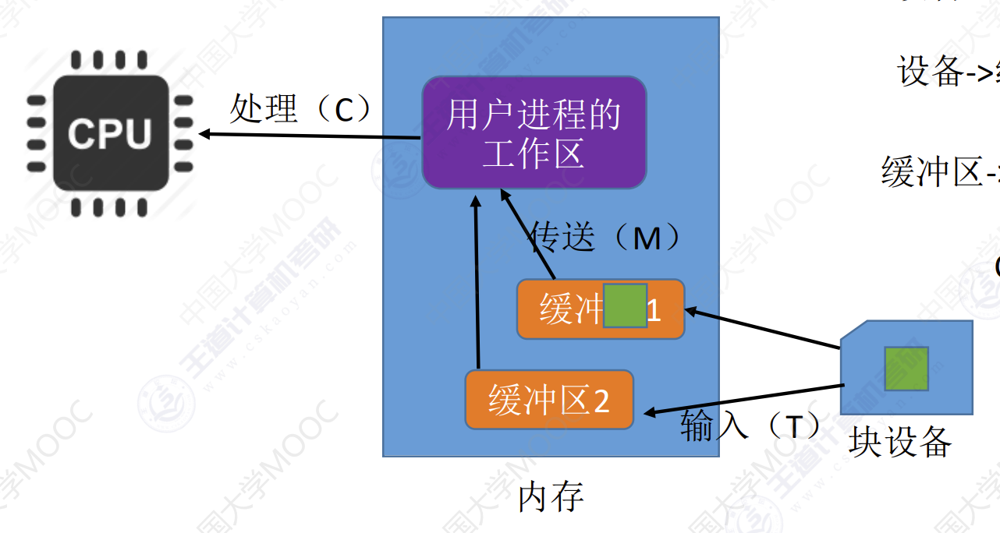

IO软件
IO软件
IO软件层次结构

设备独立性软件
设备独立性软件，又称设备无关性软件。与设备的硬件特性无关的功能几乎都在这一层实现。
这一层实现的功能：
向上层提供统一的调用接口：如
write/read系统调用设备的保护：原理类似于文件保护。设备被看做是一种特殊文件，不同用户对各个文件的访问权限是不一样的，同理，对设备的访问权限也不一样。
差错处理：设备独立性软件需要对一些设备的错误进行处理
设备的分配和回收
数据缓冲区管理：可以通过缓冲技术屏蔽设备之间数据单位大小的传输速度的差异。
建立逻辑设备名到物理设备名的映射关系；根据设备类型选择调用相应的驱动程序：用户或用户层软件发出I/O操作相关系统调用的系统调用时，需要指明此次要操作的I/O设备的逻辑设备名。设备独立性软件需要通过**逻辑设备表(LUT，Logical UnitTable)**来确定逻辑设备对应的物理设备，并找到该设备对应的设备驱动程序

操作系统系统可以采用两种方式管理逻辑设备表（LUT）：
- 第一种方式，整个系统只设置一张LUT，这就意味着所有用户不能使相同的逻辑设备名，因此这种方式只适用于单用户操作系统。
- 第二种方式，为每个用户设置一张LUT，各个用户使用的逻辑设备名可以重复，适用于多用户操作系统。系统会在用户登录时为其建立一个用户管理进程，而LUT就存放在用户管理进程的PCB中。
为何不同的设备需要不同的设备驱动程序？


设备驱动程序
主要负责对硬件设备的具体控制，将上层发出的一系列命令（如read/write）转化成特定设备“能听得懂”的一系列操作。包括设置设备寄存器；检查设备状态等
中断处理程序
当I/O任务完成时，I/O控制器会发送一个中断信号，系统会根据中断信号类型找到相应的中断处理程序并执行。中断处理程序的处理流程如下：

用户通过调用用户层软件提供的库函数发出的I/O请求
- 用户通过系统调用请求设备独立性软件层服务
- 设备独立性软件层根据LUT调用设备对应的驱动程序
- 驱动程序向I/O控制器发出具体指令
- 等待I/O完成的进程应该被阻塞，因此需要进程切换，而进程切换必然需要中断处理。
总结

理解并记住I/O软件各个层次之间的顺序，要能够推理判断某个处理应该是在哪个层次完成的（最常考的是设备独立性软件、设备驱动程序这两层）。只需理解一个特点即可：直接涉及到硬件具体细节、且与中断无关的操作肯定是在设备驱动程序层完成的；没有涉及硬件的、对各种设备都需要进行的管理工作都是在设备独立性软件层完成的。
IO核心子系统

假脱机技术在用户层软件实现，假脱机技术需要请求磁盘设备的设备独立性软件服务，因此一般来说假脱机技术是在用户层软件实现的。
I/O调度、设备保护、设备分配与回收、缓冲区管理（即缓冲与高速缓存）在IO核心子系统实现。
I/O调度：用某种算法确定一个好的顺序来处理各个I/O请求。
如：磁盘调度（先来先服务算法、最短寻道优先算法、SCAN算法、C-SCAN算法、LOOK算法、C-LOOK算法）。当多个磁盘I/O请求到来时，用某种调度算法确定满足I/O请求的顺序。同理，打印机等设备也可以用先来先服务算法、优先级算法、短作业优先等算法来确定I/O调度顺序
设备保护：保护设备被正确的控制和执行
在UNIX系统中，设备被看做是一种特殊的文件，每个设备也会有对应的FCB。当用户请求访问某个设备时，系统根据FCB中记录的信息来判断该用户是否有相应的访问权限，以此实现“设备保护”的功能。
假脱机技术
在手工操作阶段：主机直接从I/O设备获得数据，由于设备速度慢，主机速度快。人机矛盾明显，主机要浪费很多时间来等待设备。

批处理阶段引入了脱机输入，输出技术：在外围控制机的控制下，慢速输入设备的数据先被输入到更快速的磁带上。之后主机可以快速的从此单上读入数据，从而缓解了速度矛盾。
引入脱机技术后，缓解了CPU与慢速I/O设备的速度矛盾。另一方面，即使CPU在忙碌，也可以提前将数据输入到磁带；即使慢速的输出设备正在忙碌，也可以提前将数据输出到磁带。
SPOOLing技术
假脱机技术，又称SPOOLing技术是用软件的方式模拟脱机技术。 SPOOLing系统的组成如下：

- 输出井：用于收容IO设备向磁盘输入的数据。
- 输入井：用于收入进程向设备输入的数据。
- 输入进程：模拟脱机输入时的外围控制机。
- 输出进程：模拟脱机输出时的外围控制机。
- 输入缓冲区：将暂存在磁盘中输出的数据，之后在传送到输出设备上。
- 输出缓冲区：用于暂存在IO设备输入的数据，之后在传送到输入井中。
共享打印机原理
- 独占式设备：只允许各个进程串行使用的设备。一段时间内只能满足一个进程的请求。
- 共享设备：允许多个进程“同时”使用的设备（宏观上同时使用，微观上可能是交替使用）。可以同时满足多个进程的使用请求。
当多个用户进程提出输出打印的请求时，系统会答应它们的请求，但是并不是真正把打印机分配给他们，而是由假脱机管理进程为每个进程做两件事：

- 在磁盘输出井中为进程申请一个空闲缓冲区，并将要打印数据送入其中。
- 为用户进程创建一个打印请求表，并将用户的打印请求填入表中，在将该表挂到假脱机文件队列上。
当打印机空闲时，输出进程会从文件队列的队头取出一张打印请求表，并根据表中的要求将要打印的数据从输出井传送到输出缓冲区，再输出到打印机进行打印。用这种方式可依次处理完全部的打印任务
虽然系统中只有一个台打印机，但每个进程提出打印请求时，系统都会为在输出井中为其分配一个存储区（相当于分配了一个逻辑设备），使每个用户进程都觉得自己在独占一台打印机，从而实现对打印机的共享。SPOOLing 技术可以把一台物理设备虚拟成逻辑上的多台设备，可将独占式设备改造成共享设备。
缓冲区管理
缓冲区是一个存储区域，可以由专门的硬件寄存器组成，也可利用内存作为缓冲区。使用硬件作为缓冲区的成本较高，容量也较小，一般仅用在对速度要求非常高的场合（如存储器管理中所用的联想寄存器，由于对页表的访问频率极高，因此使用速度很快的联想寄存器来存放页表项的副本）
一般情况下，更多的是利用内存作为缓冲区，设备独立性软件的缓冲区管理就是要组织管理好这些缓冲区
缓冲区作用
- 缓和CPU和IO设备速度不匹配的矛盾。
- 减少对CPU的中断频率，放宽对CPU中断响应时间的限制。
- 解决数据粒度不匹配的问题。
- 提高CPU和IO设备之间的平行性。

单缓冲
假设某用户进程请求某种块设备读入若干块的数据。若采用单缓冲的策略，操作系统会在主存中为其分配一个缓冲区（若题目中没有特别说明，一个缓冲区的大小就是一个块）。
注意：当缓冲区数据非空时，不能往缓冲区冲入数据，只能从缓冲区把数据传出；当缓冲区为空时，可以往缓冲区冲入数据，但必须把缓冲区充满以后，才能从缓冲区把数据传出。

效率分析：

结论：采用单缓冲策略，处理一块数据平均耗时$MAX(C, T)+M $
双缓冲
假设某用户进程请求某种块设备读入若干块的数据。若采用双缓冲的策略，操作系统会在主存中为其分配两个缓冲区（若题目中没有特别说明，一个缓冲区的大小就是一个块）
假设初始状态为：工作区空，其中一个缓冲区满，另一个缓冲区空假设$T<C+M$

结论：采用单缓冲策略，处理一块数据平均耗时$MAX(C+M, T)$
单双缓冲的区别
- 若两个相互通信的机器只设置单缓冲区，在任一时刻只能实现数据的单向传输。
- 若两个相互通信的机器设置双缓冲区，则同一时刻可以实现双向的数据传输。
循环缓冲区
将多个大小相等的缓冲区链接成一个循环队列。
注：以下图示中，橙色表示已充满数据的缓冲区，绿色表示空缓冲区。
缓冲池
缓冲池由系统中共用的缓冲区组成。这些缓冲区按使用状况可以分为：空缓冲队列、装满输入数据的缓冲队列（输入队列）、装满输出数据的缓冲队列（输出队列）。
另外，根据一个缓冲区在实际运算中扮演的功能不同，又设置了四种工作缓冲区：用于收容输入数据的工作缓冲区（hin）、用于提取输入数据的工作缓冲区（sin）、用于收容输出数据的工作缓冲区（hout）、用于提取输出数据的工作缓冲区（sout）

- 输入进程请求输入数据：在空缓冲队列中选择一个空闲缓冲区作为“收容数据的工作缓冲区
(hin)”。冲满数据后将缓冲区挂到输入队列队尾。 - 计算进程想要取得一块输入数据：从输入队列中获取一块冲满输入数据的缓冲区“作为提取输入数据的工作缓冲区
(sin)”。缓冲区读空后挂到空缓冲区队列。 - 计算进程想要将准备好的数据冲入缓冲区：从空缓冲队列中取出一块作为“收容输出数据的工作缓冲区
(hout)”。数据冲满后将缓冲区挂到输出队列队尾。 - 输出进程请求输出数据：从输出队列中取得一块冲满输出数据的缓冲区作为“提取输出数据的工作缓冲区
(sout)”。缓冲区读空后挂到空缓冲区队列。
设备的分配和回收
设备分配所考虑的因素
设备的固有属性
独占设备：应该时间段只能分配给一个进程
共享设备：可同时分配给多个进程使用，各个进程上往往是宏观上同时使用和共享设备而在微观上交替使用。
虚拟设备：采用SPOOLING技术将独占设备改造成可虚拟的共享设备，可同时分配给多个进程使用。
设备分配算法
先来先服务，短任务优先，优先级优先。
设备分配中的安全性
从进程运行安全上考虑，设备分配有两种方式:
安全分配方式：为进程分配一个设备后就将进程阻塞，本次I/O完成后再将进程唤醒。
- 特点：一段时间内进程只能使用一个设备。
- 优点：破坏了请求和保持条件，不会死锁。
- 缺点：对于一个进程来说，CPU和I/O设备只能串行工作。
不安全的分配方式：进程发出IO请求后，系统为其分配IO设备，进程可继续执行，之后还可以发出新的IO请求，只有某个IO请求得不到满足时才将进程阻塞。
- 特点：一个进程可以同时使用多个设备。
- 优点：进程运行和IO运行同时进行，提高了进程运行效率
- 缺点：容易导致死锁。
静态分配和动态分配
- 静态分配：进程运行前为其分配所需的全部IO资源。
- 动态分配：进程运行过程中动态的分配资源
设备中的数据结构

设备控制表：系统为每个失败配置一张DCT，用于记录设备情况。

- 设备控制器表：每个设备控制器都会对应一张COCT。操作系统根据COCT的信息对控制器进行操作和管理。

- 通道控制表： 每个通道都会对应一张CHCT。操作系统根据CHCT的信息对通道进行操作和管理。

- 系统设备表：记录了系统中全部设备的情况，每个设备对应一个表目。

设备分配的步骤：
- 根据进程请求的物理设备名查找SDT
- 根据SDT找DCT，若设备忙碌则将进程PCB挂到设备等待队列中，不忙了则将设备分配给进程。
- 根据DCT找COCT，若控制器忙碌则将进程PCB挂到控制器等待队列中，不忙了则将控制器分配给进程。
- 根据COCT找到CHCT，若通道忙碌则将进程PCB挂到通道等待队列中，不忙碌则将通道分配给进程。
设备分配步骤的改进
逻辑分配表(LUT)：建立了逻辑设备与物理设备名之间映射关系
某用户进程第一次使用设备时使用逻辑设备名向操作系统发出请求，操作系统根据用户进程指定的设备类型查找系统设备表，找到一个空闲设备分配给改进程，并在LUT中增加表项。如果之后用户进程再次通过逻辑设备名请求使用设备，则操作系统通过LUT表就可以知道用户实际要使用哪个设备，并且也能知道对应设备驱动程序的地址。
- 整个系统设只有一张LUT：各个用户使用的逻辑设备名不重复，适用与单用户操作系统。
- 一个进程设置一张LUT：不用用户的逻辑设备名可以重复，适用于多用户操作系统。
输入输出程序接口

设备驱动接口